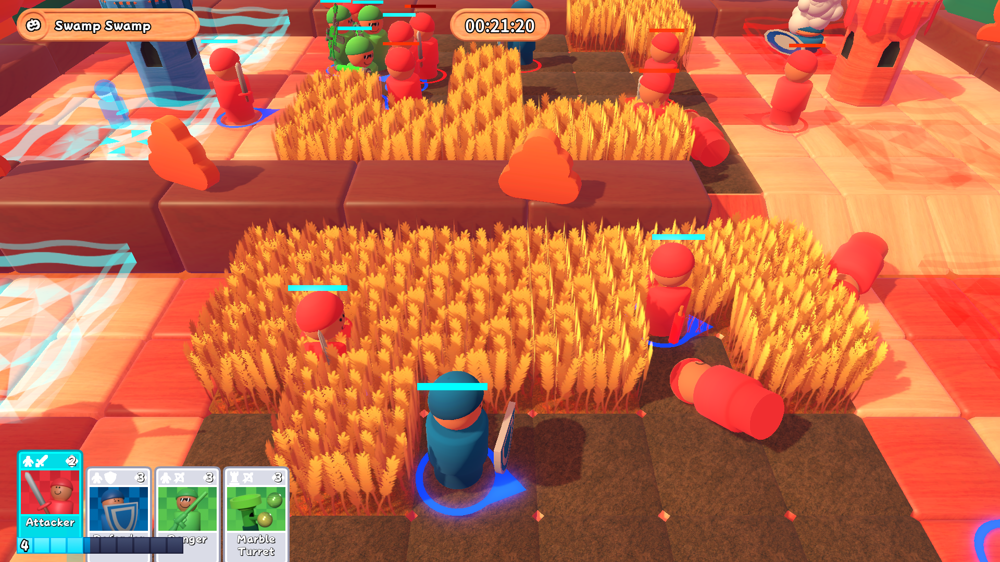

This is my self-published game. What does that mean?
For this project, we wanted it to be commercial from day 1. That meant going about development quite differently, as we had to not only go through Steamworks to get the game on Steam's marketplace, but also form a proper LLC. That LLC is known as Spark'd Games. It might even get its own website at some point, but for now we just have a LinkTree as our HQ.
This game was created mostly by two people. Benjamin Barnes, as well as myself. We also had an original soundtrack done by Jonah Thomas, and marketing help from Shaina Zaccagnino and Axel Rodriguez-Leon.
We made this game on top of Wooden Wars, which was originally a jam game made in about two weeks. Even shortly after that game concluded, both Benjamin and I agreed that we could expand that game (with just 5 levels) into something much grander. Of course, I was finishing up my last semester of college at the time, and we were both hard at work on our Senior Capstone which would become Tails of the Tower.

Here's a preview of a gameplay screenshot late into development.
The aim of this game is to get your units (the ones with the blue circles) to capture the enemy towers (red). Units automatically navigate the terrain, but you can also order them around to do things better.